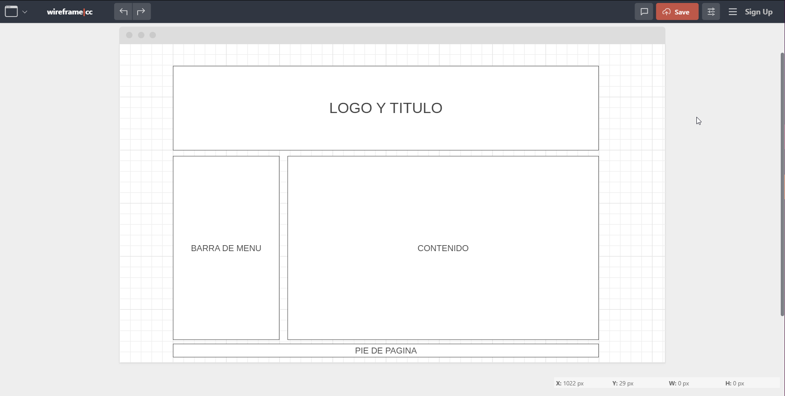

Diseñar un sitio el cual cumpla con todo y cada una de las especificaciones generales solicitas en la guia de actividades dando asi una explicacion correcto sobre que es el html5 y algunos de sus puntos mas importantes
Bienvenidos en esta ocacion os venimos a explicar de que trata Html5 dando asi una especie de mini curso intencivo con las nociones basicas del mismo.
HTML5 es una version de html la cual contiene en ella algunas funciones mejoradas sobre html la cualla hace mucho mejor en cuanto a programacion web y la creacion de paginas con lo cual es ahora la version mas usada de todas con esta tambien nos permite la union de lagunos tipos de codigo diferentes con los cuales tambien podemos realizar mucho mejor la creacion de nuestras paginas web.
es utilizado para determinar los contenidos de una pagina es decir sirve para determinar las secciones del contenido del trabajo
es utilizado para mostrar composiciones contenidades dentro de un documento.
representa un pie de página para el contenido de sección más cercano o el elemento raíz de sección Un pie de página típicamente contiene información acerca de el autor de la sección, datos de derechos de autor o enlaces a documentos relacionados.
representa una sección de una página que consiste en contenido que está indirectamente relacionado con el contenido principal del documento. Estas secciones son a menudo representadas como barras laterales o como inserciones y contienen una explicación al margen como una definición de glosario, elementos relacionados indirectamente, como publicidad, la biografía del autor, o en aplicaciones web, la información de perfil o enlaces a blogs relacionados.
